2025
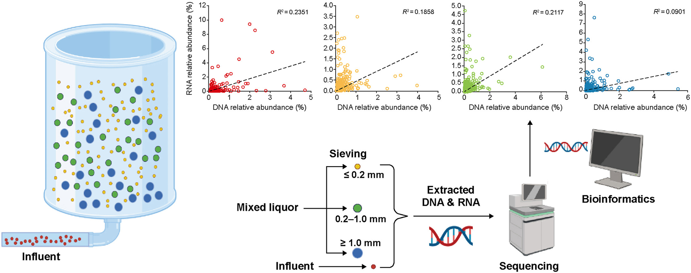
Genome-Resolved Metatranscriptomics Unveils Distinct Microbial Functionalities Across Aggregate Sizes in Aerobic Granular Sludge
Journal article
Year: 2025
DOI:
https://doi.org/10.1016/j.ese.2025.100560Authors:
Mohamed, AYA; Gill, Laurence; Monleon, Alejandro; Pronk, Mario; van Loosdrecht, Mark; Saikaly, Pascal E; Ali, Muhammad
Journal: Environmental Science and Ecotechnology · Pages: 100560 · Publisher: Elsevier
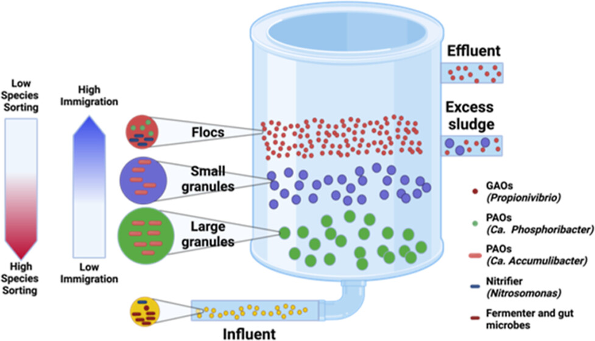
Genome-Resolved Metatranscriptomics Provide Insights on Immigration Influence in Structuring Microbial Community Assembly of a Full-Scale Aerobic Granular Sludge Plant
Journal article
Year: 2025
DOI:
https://doi.org/10.1021/acs.est.4c14471Authors:
Mohamed, A. Y. A.; Gill, Laurence; Monleon, Alejandro; Pronk, Mario; van Loosdrecht, Mark; Saikaly, Pascal E.; Muhammad Ali
Journal: Environmental Science & Technology
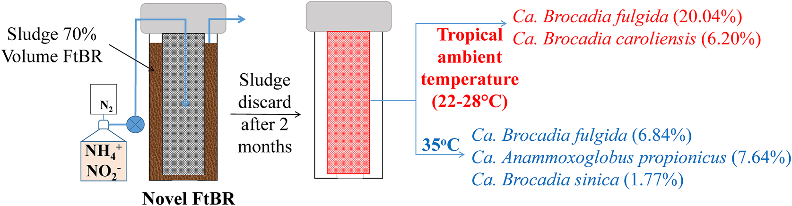
Cultivation of anammox bacteria from a tropical lake in Indonesia using a novel filter bioreactor to enhance nitrogen removal efficiency
Journal article
Year: 2025
DOI:
https://doi.org/10.2166/wst.2025.050Authors:
Zulkarnaini; Komala, Puti Sri; Putra, Randi Permana; Ali, Muhammad; Matsuura, Norihisa; Koike, Kazuyoshi; Wang, Jinsong; Mawarda, Panji Cahya; Yamamoto-Ikemoto, Ryoko
Journal: Water Science & Technology · Volume: 91 · Issue: 7 · Pages: 811–826 · Publisher: IWA Publishing
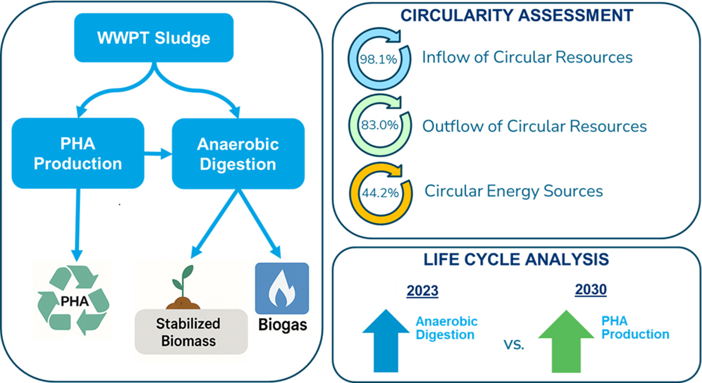
The circular value of polyhydroxyalkanoate (PHA) bioplastic production from sludge at a large-scale wastewater treatment plant
Journal article
Year: 2025
DOI:
https://doi.org/10.1016/j.biteb.2025.102272Authors:
Cormac O'Maolduin; Alexander Compeer; Jappe De Best; Laurence Gill; Muhammad Ali; John Gallagher
Journal: Bioresource Technology Reports
2024
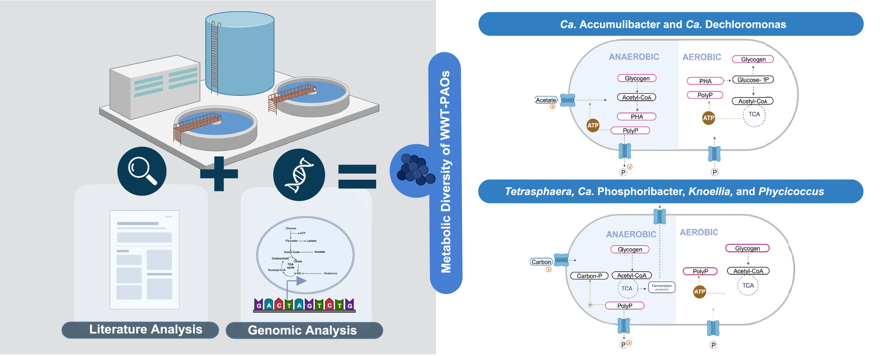
Demystifying polyphosphate-accumulating organisms relevant to wastewater treatment: A review of their phylogeny, metabolism, and detection
Review
Year: 2024
DOI:
https://doi.org/10.1016/j.ese.2024.100387Authors:
Lucia Ruiz-Haddad; Muhammad Ali; Mario Pronk; Mark C.M. van Loosdrecht; Pascal E. Saikaly
Journal: Environmental Science and Ecotechnology

Striking a Balance: Decentralized and Centralized Wastewater Treatment Systems for Advancing Sustainable Development Goal 6
Journal article
Year: 2024
DOI:
https://doi.org/10.1002/aesr.202400097Authors:
Saadatinavaz, Fateme; Alomari, Mohammed A.; Ali, Muhammad; Saikaly, Pascal E.
Journal: Adv. Energy Sustainability Res · Pages: 2400097
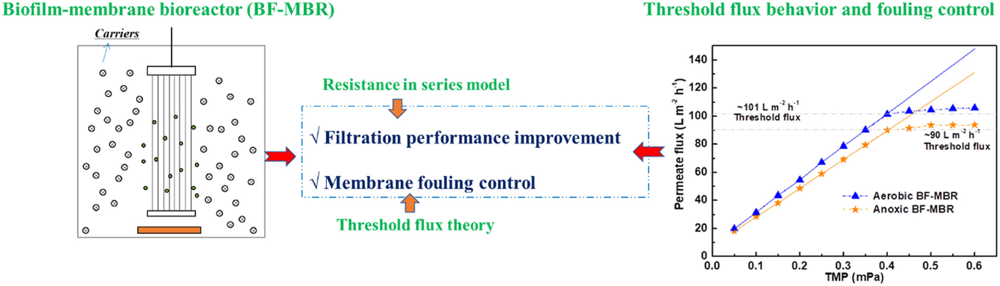
Filtration Performance of Biofilm Membrane Bioreactor: Fouling Control by Threshold Flux Operation
Journal article
Year: 2024
DOI:
https://doi.org/10.1002/aesr.202400097Authors:
Zhang, Wenxiang; Liang, Wenzhong; Jin, Jiarou; Meng, Shujuan; He, Ziqiang; Ali, Muhammad; Saikaly, Pascal E.
Journal: Chemosphere · Pages: 142458
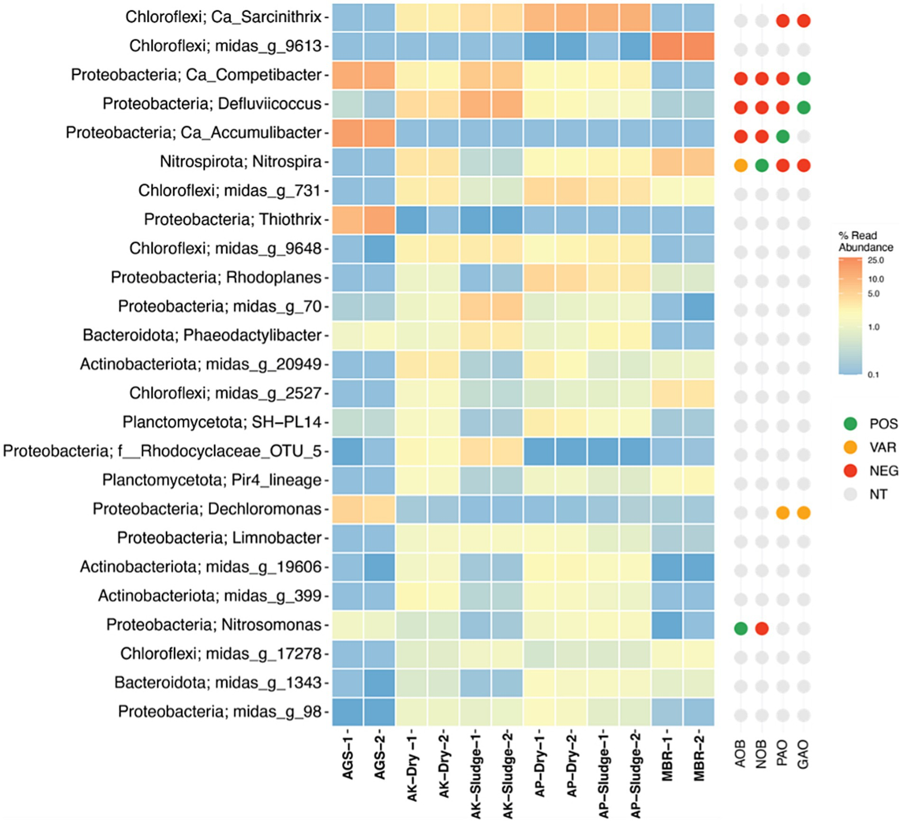
Alginate-like exopolysaccharides extracted from different waste sludges exhibit varying physicochemical and material properties
Journal article
Year: 2024
DOI:
https://doi.org/10.3389/fmicb.2024.1493782Authors:
Rehman, Zahid Ur; Ghaani, Masoud; Mohamed, Ahmed YA; Gallagher, John; Saikaly, Pascal E; Ali, Muhammad
Journal: Frontiers in Microbiology · Volume: 15 · Pages: 1493782 · Publisher: Frontiers Media SA
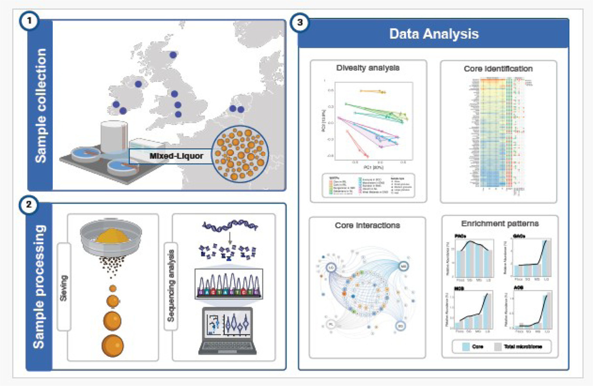
Characterization of the core microbial community across different aggregate sizes in full-scale aerobic granular sludge plants and their relevance to wastewater treatment performance
Journal article
Year: 2024
DOI:
https://doi.org/10.3389/fmicb.2024.1493782Authors:
Ruiz-Haddad, Lucia; Shaw, Dario Rangel; Ali, Muhammad; Pronk, Mario; van Loosdrecht, Mark CM; Saikaly, Pascal E
Journal: Water Research · Pages: 123036 · Publisher: Elsevier
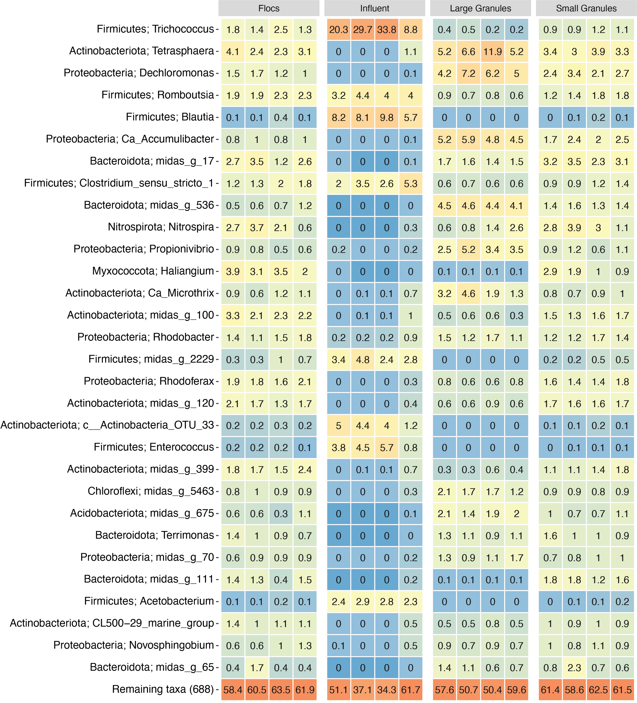
Genomics Tools to Study Membrane-Based Systems
Book chapter
Year: 2024
DOI:
https://doi.org/10.2166/9781789062977_0315Authors:
Ali, Muhammad; Haddad, Lucia Ruiz; Haroon, Mohamed Fauzi; Saikaly, Pascal E.
Book: Experimental Methods for Membrane Applications in Desalination and Water Treatment · Publisher: IWA Publishing
2023

Performance Evaluation of a Pilot-Scale Aerobic Granular Sludge Integrated with Gravity-Driven Membrane System Treating Domestic Wastewater
Journal article
Year: 2023
DOI:
https://doi.org/10.1021/acsestwater.3c00178Authors:
Ali, Muhammad; Singh, Yogesh; Fortunato, Luca; Rehman, Zahid Ur; Manjunath, Sarvajith; Vrouwenvelder, Johannes; Pronk, Mario; van Loosdrecht; andPascal Saikaly, Mark C. M.
Journal: ACS EST Water · Publisher: ACS
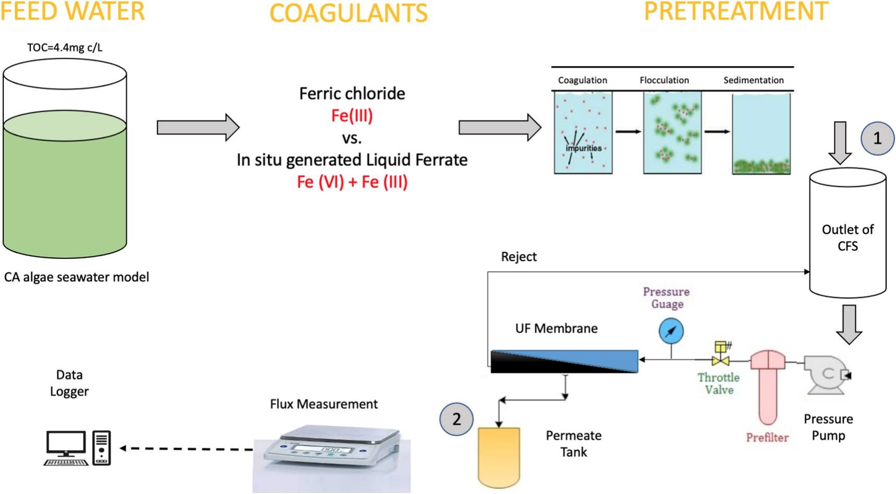
Combination of advanced coagulation Fe(VI) and UF membrane to effectively remove organic compounds and mitigate biofouling during harmful algal bloom
Journal article
Year: 2023
DOI:
https://doi.org/10.1016/j.desal.2023.116882Authors:
Abdullah H. Alshahri; M. Obaidb; Abdullah H.A. Dehwah; Thomas M. Missimer; Muhammad Ali; Noreddine Ghaffour
Journal: Desalination

Successful characterisation of on-site wastewater treatment system biomats using the Microbes of Activated Sludge and Anaerobic Digesters (MiDAS) taxonomic database
Conference abstract
Year: 2023
DOI:
https://doi.org/10.5194/egusphere-egu23-16018Authors:
Criado Monleon, Alejandro Javier; Knappe, Jan; Somlai, Celia; Ospina Betancourth, Carolina; Ali, Muhammad; Curtis, Thomas P; Gill, Laurence William
Conference: EGU General Assembly Conference Abstracts · Pages: EGU–16018
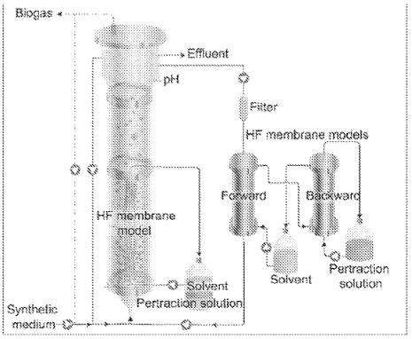
Fluidized chain elongation membrane bioreactor for production and recovery of carboxylates from organic biomass
Patent
Year: 2023
DOI:
https://patentimages.storage.googleapis.com/f9/20/a2/09ce3002aab67a/US20230332083A1.pdfAuthors:
Saikaly, Pascal; Xu, Jiajie; Bin, BIAN; Ali, Muhammad
Note: US Patent App. 18/044,522
2022
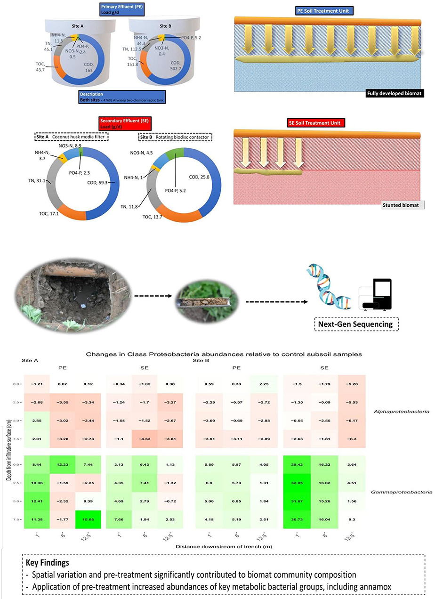
Spatial variation of microbial community structure of on-site soil treatment units in a temperate climate and the role of effluent pretreatment in the development of the biomat community
Journal article
Year: 2022
DOI:
https://doi.org/10.3389/fmicb.2022.915856Authors:
Criado Monleon, Alejandro Javier; Knappe, Jan; Somlai, Celia; Betancourth, Carolina Ospina; Ali, Muhammad; Curtis, Thomas; Gill, Laurence
Journal: Frontiers in Microbiology · Volume: 13 · Pages: 915856 · Publisher: Frontiers
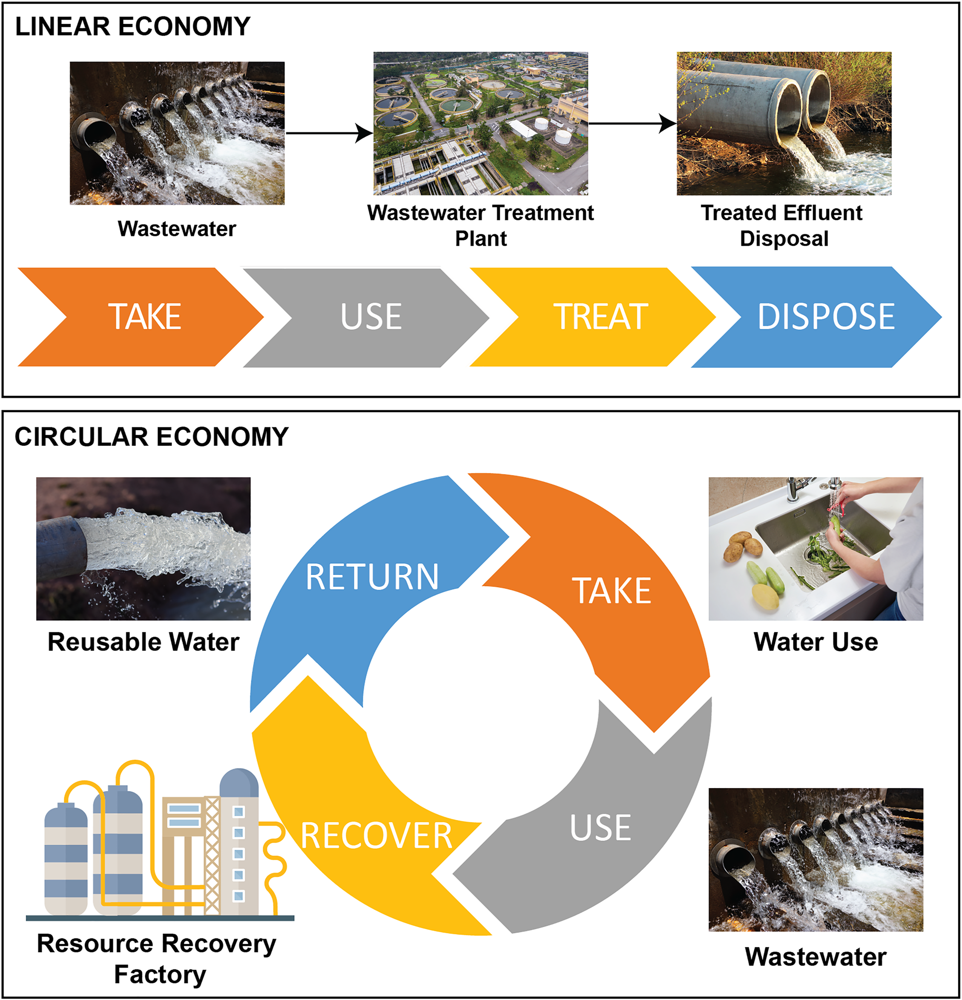
Adopting the circular model: opportunities and challenges of transforming wastewater treatment plants into resource recovery facilities in Saudi Arabia
Journal article
Year: 2022
DOI:
https://doi.org/10.2166/wrd.2022.038Authors:
Ali, Muhammad; Hong, Pei-Ying; Mishra, Himanshu; Vrouwenvelder, Johannes; Saikaly, Pascal
Journal: Journal of Water Reuse and Desalination
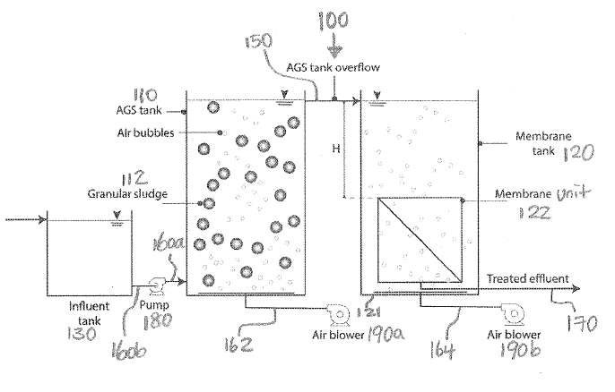
Waste water treatment system using aerobic granular sludge gravity-driven membrane system
Patent
Year: 2022
DOI:
https://patents.google.com/patent/US12378142B2/enAuthors:
Ali, Muhammad; Katuri, Krishna Prasad; Saikaly, Pascal Elias
Note: US Patent App. 17/295,625
2021
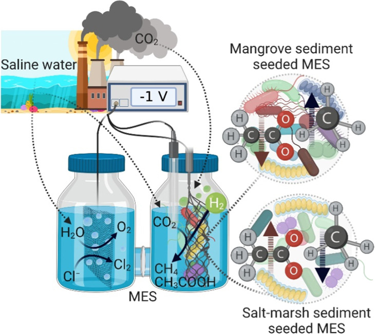
Enrichment of salt-tolerant CO2--fixing communities in microbial electrosynthesis systems using porous ceramic hollow tube wrapped with carbon cloth as cathode and for CO2 supply
Journal article
Year: 2021
DOI:
https://doi.org/10.1016/j.scitotenv.2020.142668Authors:
Alqahtani, Manal F; Bajracharya, Suman; Katuri, Krishna P; Ali, Muhammad; Xu, Jiajie; Alarawi, Mohammed S; Saikaly, Pascal E
Journal: Science of the Total Environment · Volume: 766 · Pages: 142668 · Publisher: Elsevier
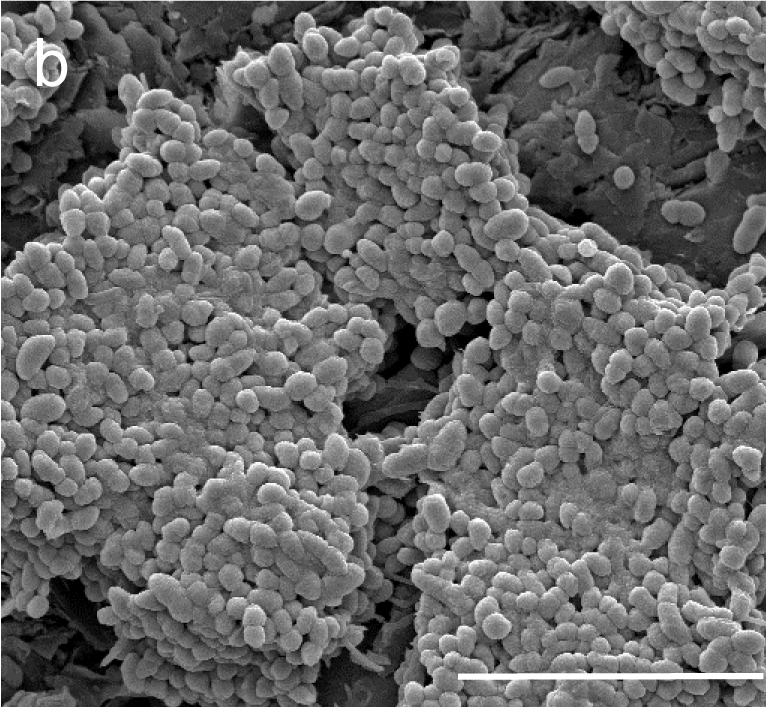
Competition of two highly specialized and efficient acetoclastic electroactive bacteria for acetate in biofilm anode of microbial electrolysis cell
Journal article
Year: 2021
DOI:
https://doi.org/10.1038/s41522-021-00218-3Authors:
Sapireddy, Veerraghavulu; Katuri, Krishna P; Ali, Muhammad; Saikaly, Pascal E
Journal: npj Biofilms and Microbiomes volume · Volume: 7 · Issue: 47 · Pages: 2021
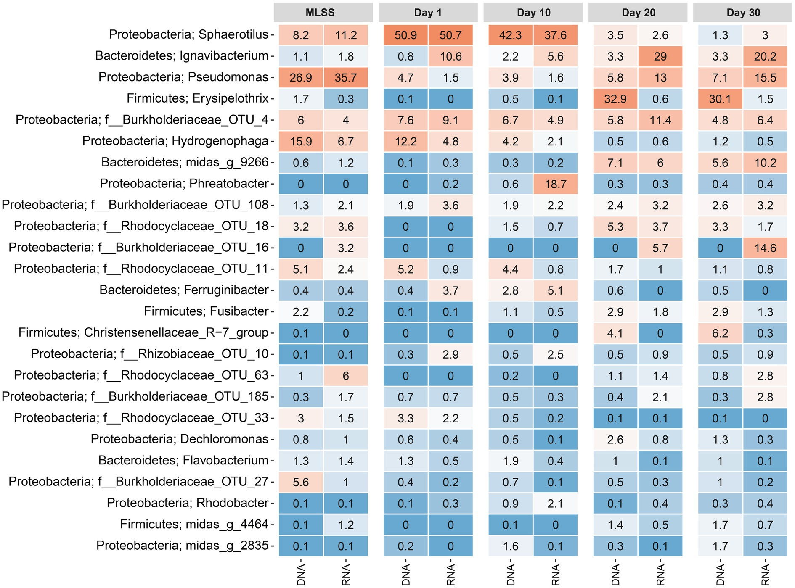
Relative Importance of Stochastic Assembly Process of Membrane Biofilm Increased as Biofilm Aged
Journal article
Year: 2021
DOI:
https://doi.org/10.3389/fmicb.2021.708531Authors:
Matar, Gerald K.; Ali, Muhammad; Bagchi, Samik; Nunes, Suzana; Liu, Wen-Tso; Saikaly, Pascal E.
Journal: Frontiers in Microbiology · Volume: 12 · Pages: 708531
2020
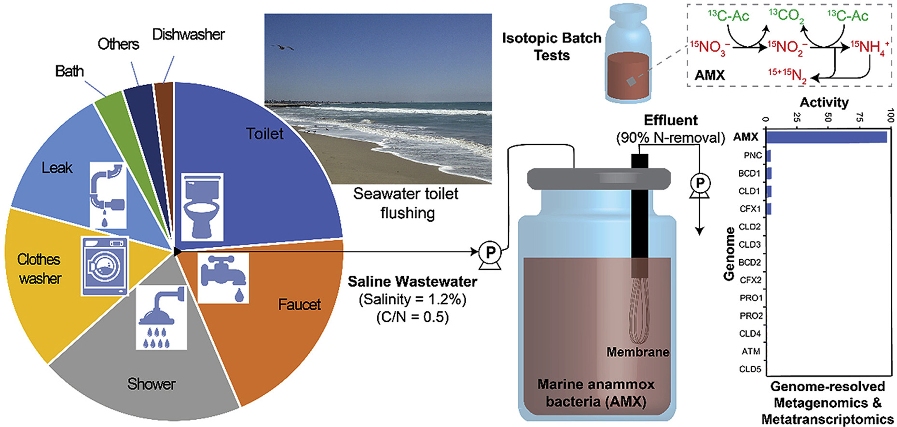
Application of an enrichment culture of the marine anammox bacterium “Ca. Scalindua sp. AMX11” for nitrogen removal under moderate salinity and in the presence of organic carbon
Journal article
Year: 2020
DOI:
https://doi.org/10.1016/j.watres.2019.115345Authors:
Ali, Muhammad; Shaw, Dario Rangel; Saikaly, Pascal E
Journal: Water Research · Volume: 170 · Pages: 115345 · Publisher: Pergamon
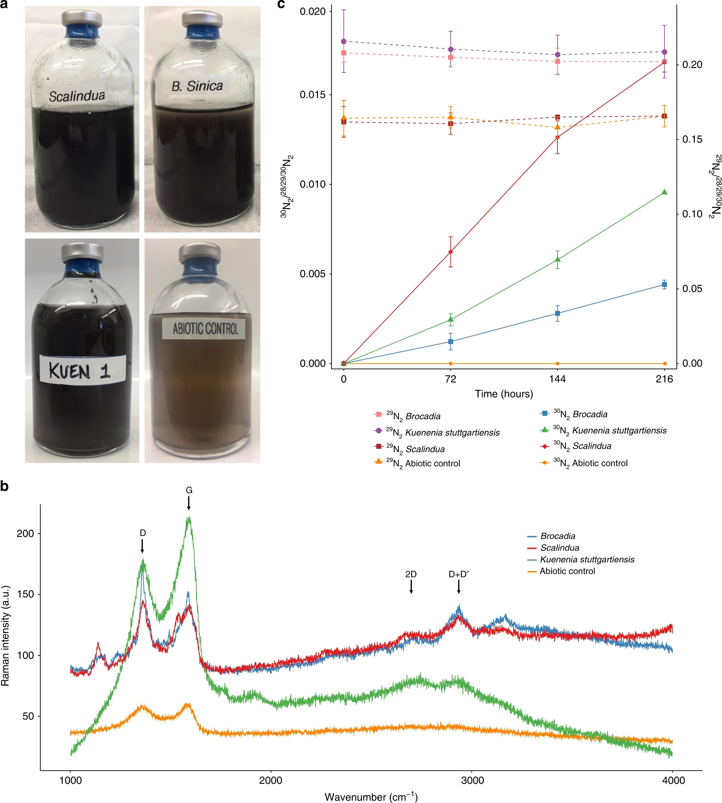
Extracellular electron transfer-dependent anaerobic oxidation of ammonium by anammox bacteria
Journal article
Year: 2020
DOI:
https://doi.org/10.1038/s41467-020-16016-yAuthors:
Shaw, Dario R; Ali, Muhammad; Katuri, Krishna P; Gralnick, Jeffrey A; Reimann, Joachim; Mesman, Rob; van Niftrik, Laura; Jetten, Mike S M; Saikaly, Pascal E
Journal: Nature Communications · Volume: 11 · Pages: 2058
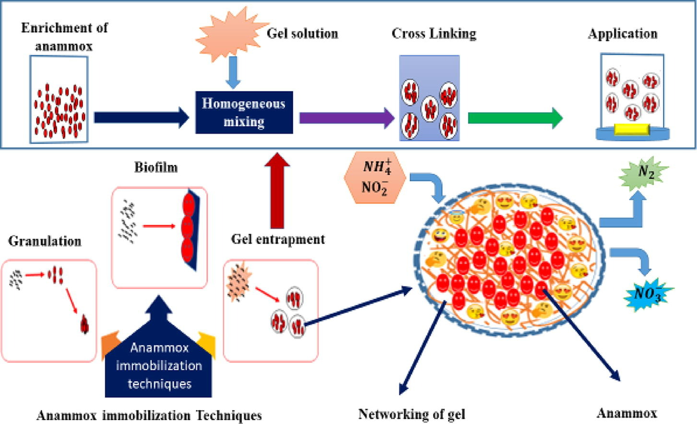
Gel immobilization: A strategy to improve the performance of anaerobic ammonium oxidation (anammox) bacteria for nitrogen-rich wastewater treatment
Journal article
Year: 2020
DOI:
https://doi.org/10.1016/j.biortech.2020.123642Authors:
Ahmad, Hafiz Adeel; Ni, Shou-qing; Ahmad, Shakeel; Zhang, Jian; Ali, Muhammad; Hao, Huu; Guo, Wenshan; Tan, Zuwan; Wang, Qi
Journal: Bioresource Technology
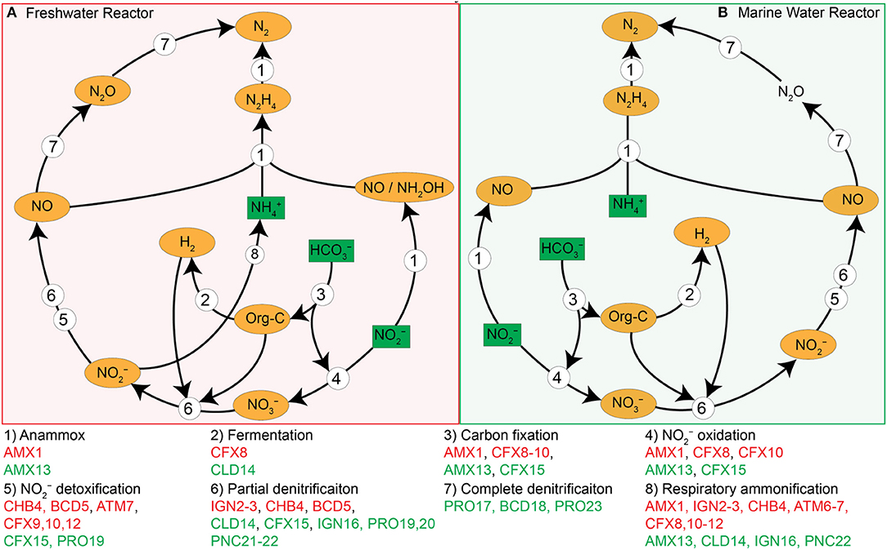
Comparative genome-centric analysis of freshwater and marine ANAMMOX cultures suggests functional redundancy in nitrogen removal processes
Journal article
Year: 2020
DOI:
https://doi.org/10.3389/fmicb.2020.01637Authors:
Ali, Muhammad; Shaw, Dario Rangel; Albertsen, Mads; Saikaly, Pascal E
Journal: Frontiers in Microbiology · Volume: 11 · Pages: 556715 · Publisher: Frontiers
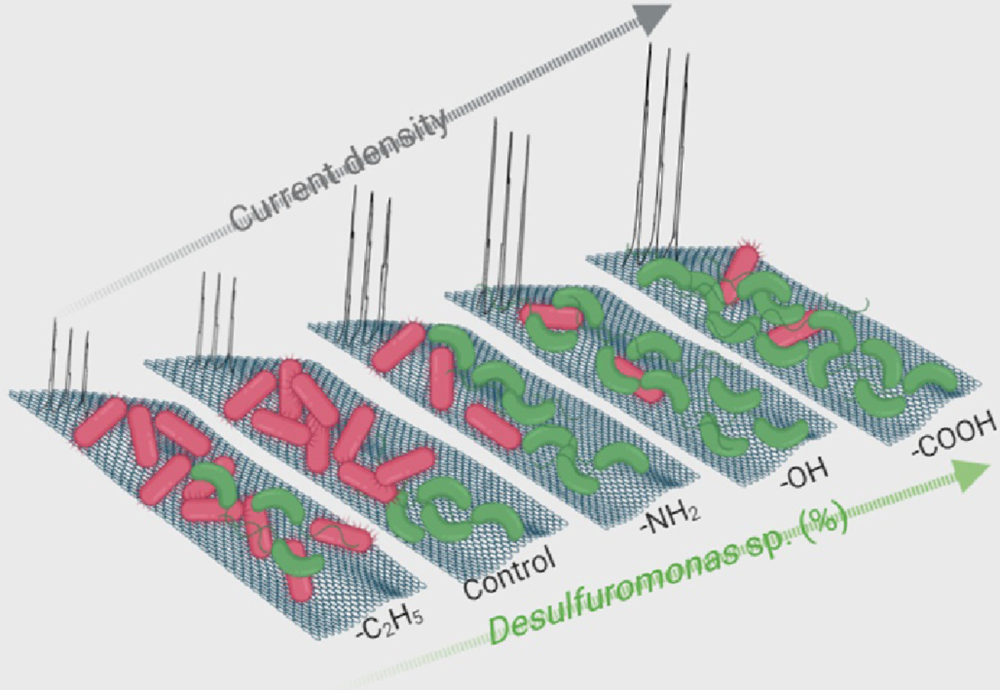
Electroactive biofilms on surface functionalized anodes: the anode respiring behavior of a novel electroactive bacterium, Desulfuromonas acetexigens
Journal article
Year: 2020
DOI:
https://doi.org/10.1016/j.watres.2020.116284Authors:
Katuri, Krishna P; Kamireddy, Sirisha; Kavanagh, Paul; Ali, Muhammad; Conghaile, Peter Ó; Kumar, Amit; Saikaly, Pascal E; Leach, Donal
Journal: Water Research
2019
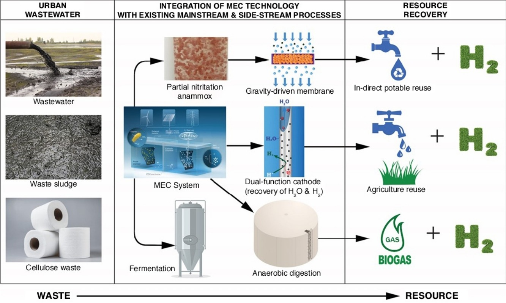
The role of microbial electrolysis cell in urban wastewater treatment: integration options, challenges and prospects
Review
Year: 2019
DOI:
https://doi.org/10.1016/j.copbio.2019.03.007Authors:
Katuri, Krishna; Ali, Muhammad; Saikaly, Pascal
Journal: Current Opinion in Biotechnology · Volume: 57 · Pages: 101–110
Draft Genome Sequence of a novel Marine Anaerobic Ammonium-Oxidizing Bacterium “Candidatus Scalindua sp.”
Journal article
Year: 2019
DOI:
https://doi.org/10.1128/mra.00297-19Authors:
Ali, Muhammad; Shaw, Dario; Saikaly, Pascal
Journal: Microbiology Resource Announcements · Volume: 8 · Issue: 999 · Pages: e00297–19
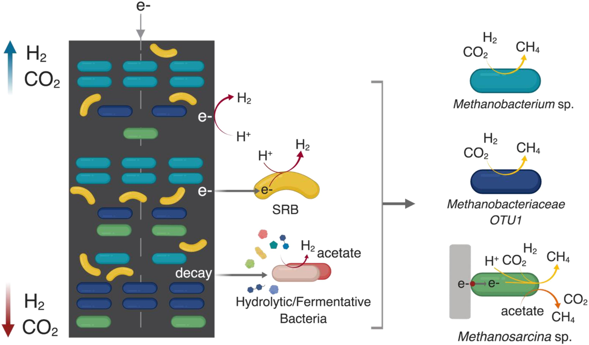
Evidence of spatial homogeneity in an electromethanogenic cathodic microbial community
Journal article
Year: 2019
DOI:
https://doi.org/10.3389/fmicb.2019.01747Authors:
Ragab, Ala'a; Katuri, Krishna; Ali, Muhammad; Saikaly, Pascal E.
Journal: Frontiers in Microbiology
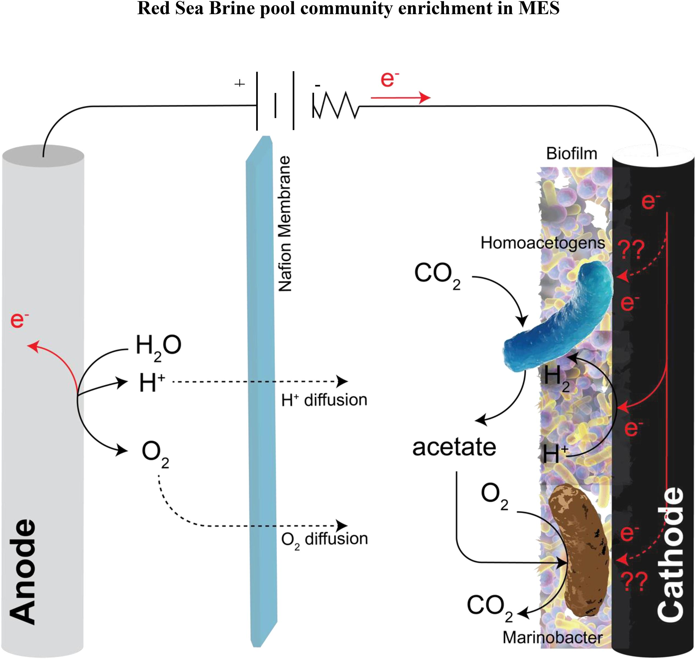
Enrichment of Marinobacter sp. and Halophilic Homoacetogens at the Biocathode of Microbial Electrosynthesis System Inoculated with Red Sea Brine Pool
Journal article
Year: 2019
DOI:
https://doi.org/10.3389/fmicb.2019.02563Authors:
Alqahtani, Manal; Bajracharya, Suman; Katuri, Krishna Prasad; Ali, Muhammad; Ragab, Alaa; Michoud, Grégoire; Daffonchio, Daniele; Saikaly, Pascal E.
Journal: Frontiers in Microbiology
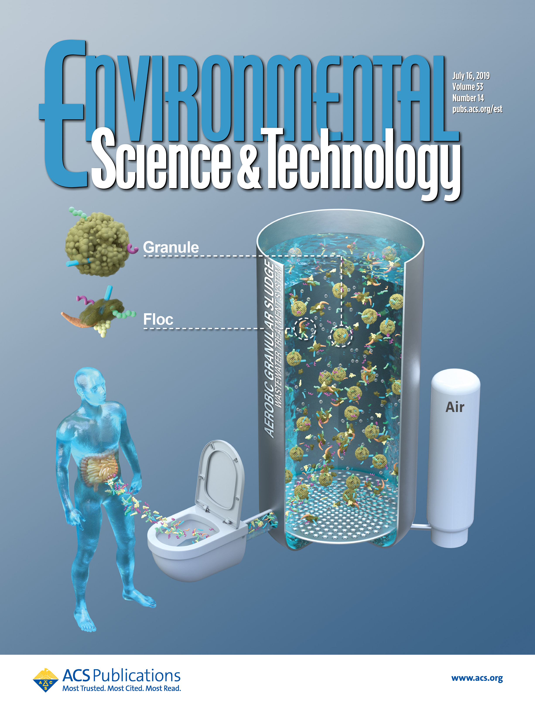
Importance of species sorting and immigration on the bacterial assembly of different-sized aggregates in a full-scale aerobic granular sludge plant
Journal article
Year: 2019
DOI:
https://doi.org/10.1021/acs.est.8b07303Authors:
Ali, Muhammad; Wang, Zhongwei; Salam, Khaled W; Hari, Ananda Rao; Pronk, Mario; van Loosdrecht, Mark CM; Saikaly, Pascal E
Journal: Environmental Science & Technology · Volume: 53 · Issue: 14 · Pages: 8291–8301 · Publisher: ACS Publications
2018
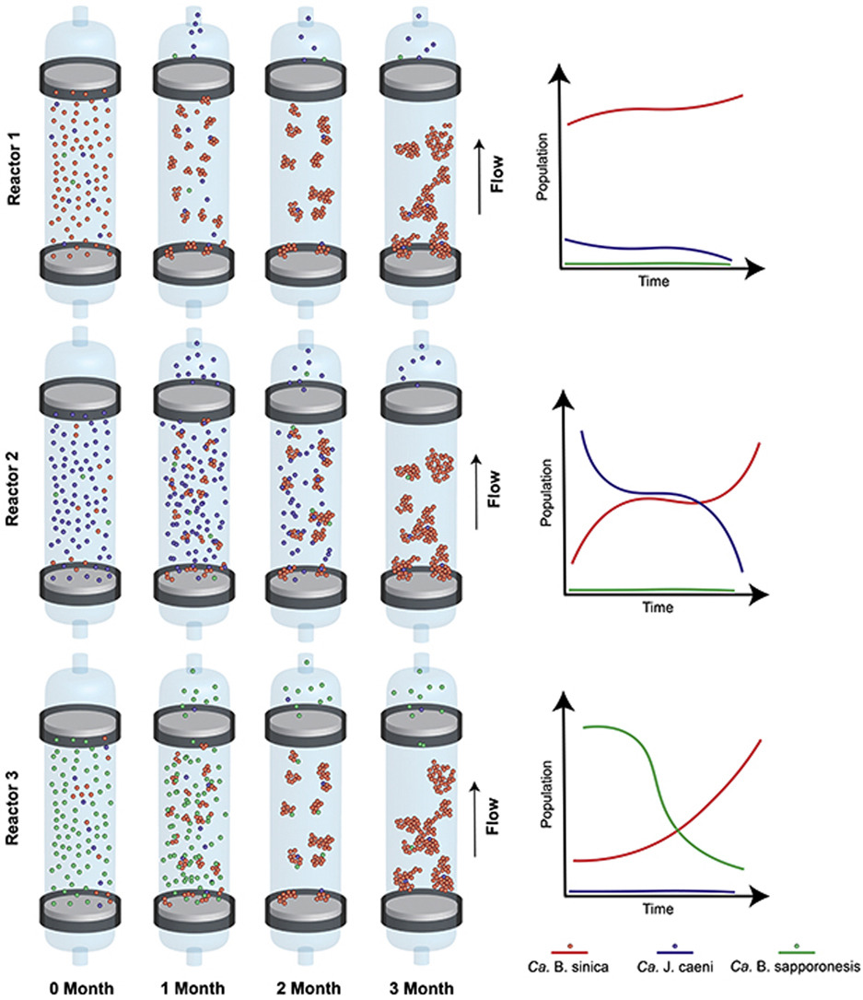
Aggregation ability of three phylogenetically distant anammox bacterial species
Journal article
Year: 2018
DOI:
https://doi.org/10.1016/j.watres.2018.06.007Authors:
Ali, Muhammad; Shaw, Dario Rangel; Zhang, Lei; Haroon, Mohamed Fauzi; Narita, Yuko; Emwas, Abdul-Hamid; Saikaly, Pascal E.; Okabe, Satoshi
Journal: Water Research
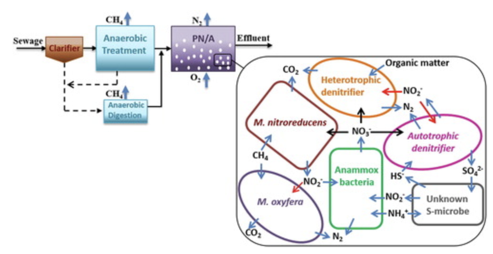
Insights into the roles of anammox bacteria in post-treatment of anaerobically-treated sewage
Review
Year: 2018
DOI:
https://doi.org/10.1080/10643389.2018.1474679Authors:
Qian Wang; Giin-Yu Amy Tan; Mohammad Azari; Xiaowu Huang; Martin Denecke; Yujie Men; Jin-Young Jung; Satoshi Okabe; Muhammad Ali; Yu-Tzu Huang; Zhuoying Wu; Wai-hung Lo; Ji-Dong Gu; Jih-Gaw Lin; Po-Heng Lee
Journal: Critical Reviews in Environmental Science and Technology · Volume: 48 · Issue: 6 · Pages: 655–684
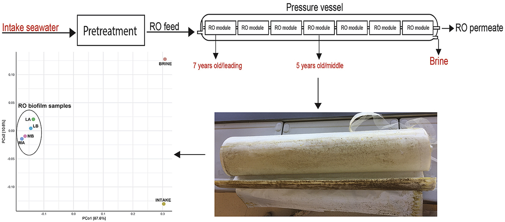
Genome-resolved metagenomic analysis reveals roles of microbial community members in full-scale seawater reverse osmosis plant
Journal article
Year: 2018
DOI:
https://doi.org/10.1016/j.watres.2018.11.012Authors:
Rehman, Zahid Ur; Ali, Muhammad; Iftikhar, Hina; Leiknes, TOrove
Journal: Water Research
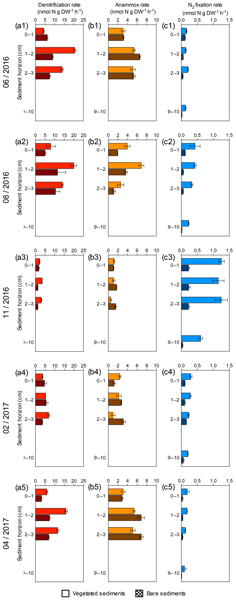
High denitrification and anaerobic ammonium oxidation contributes to net nitrogen loss in a seagrass ecosystem in the central Red Sea
Journal article
Year: 2018
DOI:
https://doi.org/10.5194/bg-15-7333-2018Authors:
Garcias-Bonet, N; Fusi, M; Ali, M; Shaw, D R; Saikaly, P E; Daffonchio, D; Duarte, C M
Journal: Biogeosciences · Volume: 15 · Pages: 7333–7346
2017
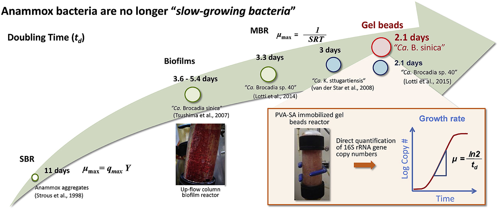
Maximum specific growth rate of anammox bacteria revisited
Journal article
Year: 2017
DOI:
https://doi.org/10.1016/j.watres.2017.03.027Authors:
Zhang, Lei; Narita, Yuko; Gao, Lin; Ali, Muhammad; Oshiki, Mamoru; Okabe, Satoshi
Journal: Water Research
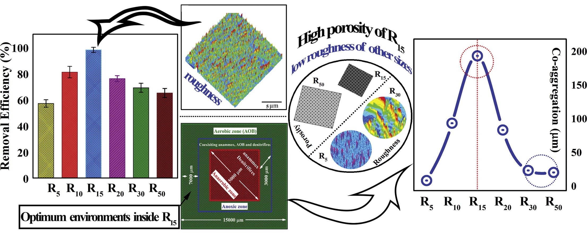
Effects of porous carrier size on biofilm development, microbial distribution and nitrogen removal in microaerobic bioreactors
Journal article
Year: 2017
DOI:
https://doi.org/10.1016/j.biortech.2017.03.076Authors:
Ahmad, Muhammad; Liu, Sitong; Mahmood, Nasir; Mahmood, Asif; Ali, Muhammad; Zheng, Maosheng; Ni, Jinren
Journal: Bioresource Technology · Volume: 234 · Pages: 360–369
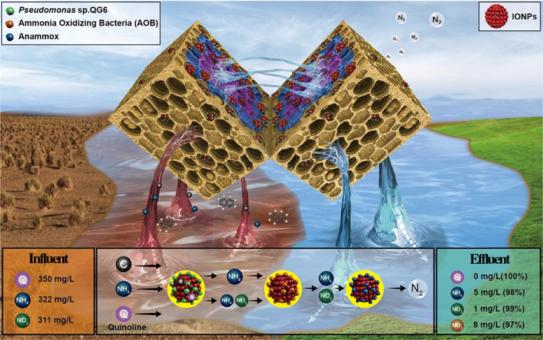
Synergic Adsorption-Biodegradation by Advance Carrier for Enhanced Removal of High-strength Nitrogen and Refractory Organics
Journal article
Year: 2017
DOI:
https://doi.org/10.1021/acsami.7b01251Authors:
Ahmad, Muhammad; Liu, Sitong; Mahmood, Nasir; Mahmood, Asif; Ali, Muhammad; Zheng, Maosheng; Ni, Jinren
Journal: ACS Applied Materials & Interfaces

Enrichment and physiological characterization of an anaerobic ammonium-oxidizing bacterium 'Candidatus Brocadia sapporoensis'
Journal article
Year: 2017
DOI:
https://doi.org/10.1016/j.syapm.2017.07.004Authors:
Narita, Y.; Zhang, L.; Kimura, Z.; Ali, M.; Fujii, T.; Okabe, S.
Journal: Systematic and Applied Microbiology
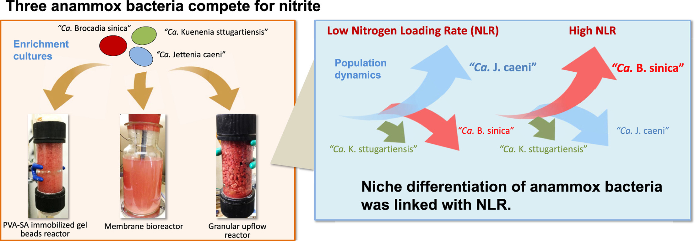
Microbial competition among anammox bacteria in nitrite-limited bioreactors
Journal article
Year: 2017
DOI:
https://doi.org/10.1016/j.watres.2017.08.052Authors:
Zhang, Lei; Narita, Yuko; Gao, Lin; Ali, Muhammad; Oshiki, Mamoru; Ishii, Satoshi; Okabe, Satoshi
Journal: Water Research
2016
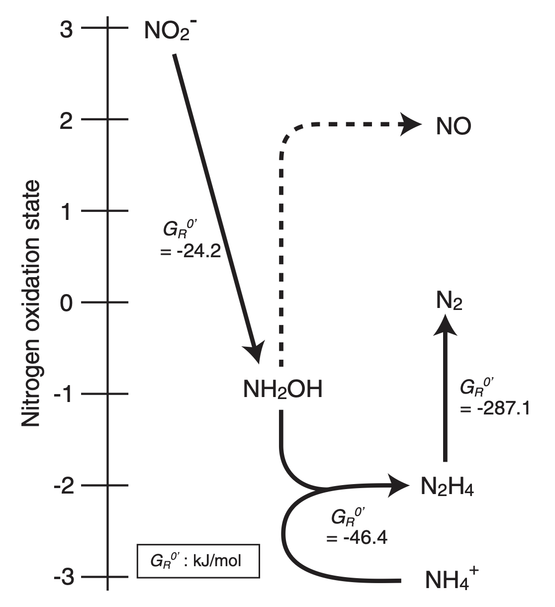
Hydroxylamine-dependent Anaerobic Ammonium Oxidation (Anammox) by “Candidatus Brocadia sinica”
Journal article
Year: 2016
DOI:
https://doi.org/10.1111/1462-2920.13355Authors:
Oshiki, Mamoru; Ali, Muhammad; Ali, Shinyako-Hata, Kaori; Satoh, Hisashi; Okabe, Satoshi
Journal: Environmental Microbiology · Volume: 18 · Issue: 9 · Pages: 3133–3143
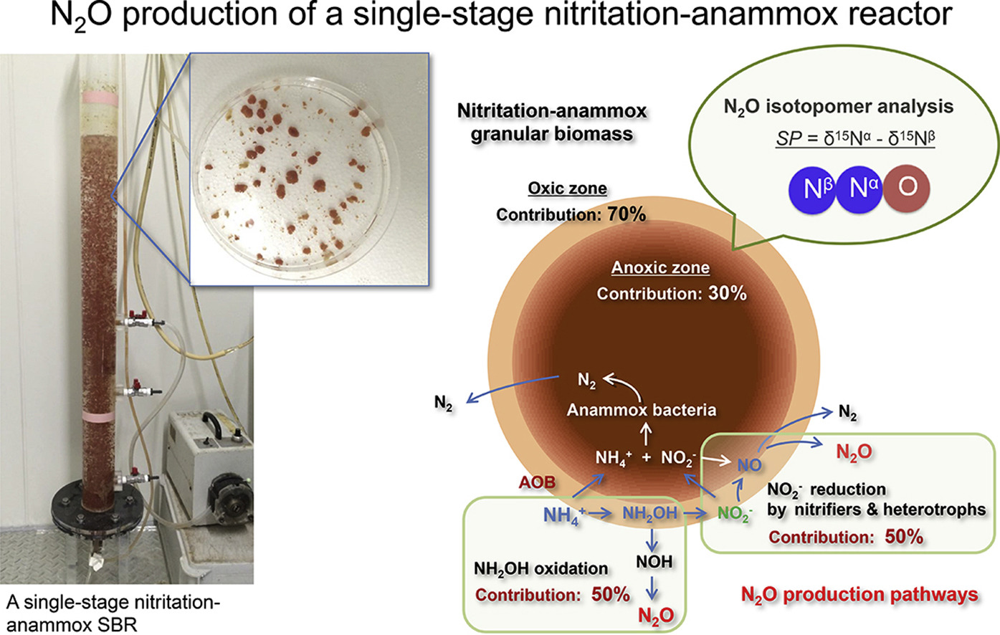
Source identification of nitrous oxide emission pathways from a single-stage nitritation-anammox granular reactor
Journal article
Year: 2016
DOI:
https://doi.org/10.1016/j.watres.2016.06.034Authors:
Ali, Muhammad; Rathnayake, Rathnayake M; Zhang, Lei; Ishii, Satoshi; Kindaichi, Tomonori; Satoh, Hisashi; Toyoda, Sakae; Yoshida, Naohiro; Okabe, Satoshi
Journal: Water Research
Draft Genome Sequence of Anaerobic Ammonium-Oxidizing Bacterium “Candidatus Brocadia sp. 40”
Journal article
Year: 2016
DOI:
https://doi.org/10.1128/genomea.01377-16Authors:
Ali, Muhammad; Haroon, Mohamed Fauzi; Narita, Yuko; Zhang, Lei; Shaw, Dario Rangel; Okabe, Satoshi; Saikaly, Pascal E.
Journal: Genome Announcement · Volume: 4 · Issue: 6 · Pages: e01377–16
2015
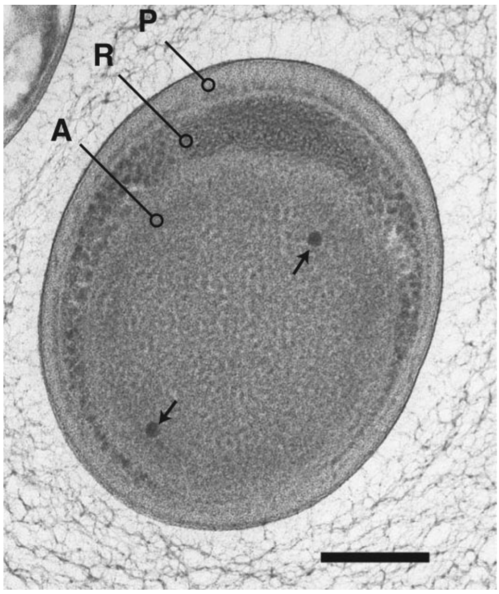
Physiological characterization of anaerobic ammonium oxidizing bacterium ‘Candidatus Jettenia caeni’
Journal article
Year: 2015
DOI:
https://doi.org/10.1111/1462-2920.12674Authors:
Ali, Muhammad; Oshiki, Mamoru; Awata, Takanori; Isobe, Kazuo; Kimura, Zenichiro; Yoshikawa, Hiroaki; Hira, Daisuke; Kindaichi, Tomonori; Satoh, Hisashi; Fujii, Takao; et al.
Journal: Environmental Microbiology · Volume: 17 · Issue: 6 · Pages: 2172–2189 · Publisher: Wiley
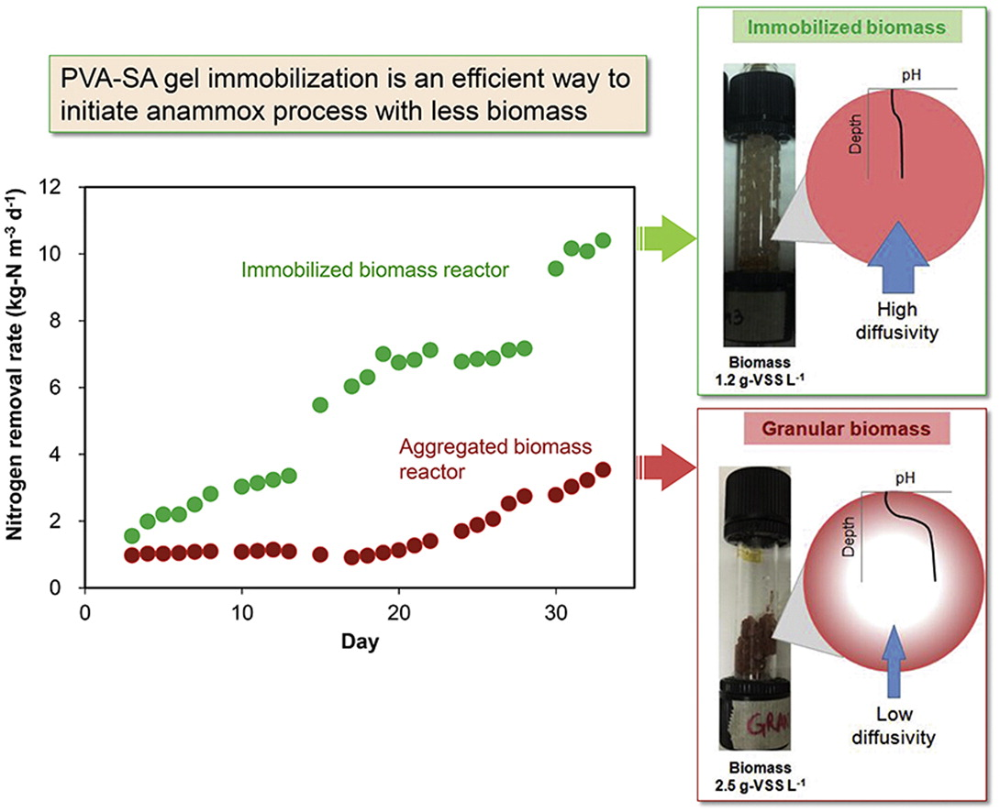
Rapid and successful start-up of anammox process by immobilizing the minimal quantity of biomass in PVA-SA gel beads
Journal article
Year: 2015
DOI:
https://doi.org/10.1016/j.watres.2015.04.024Authors:
Ali, Muhammad; Oshiki, Mamoru; Rathnayake, Lashitha; Ishii, Satoshi; Satoh, Hisashi; Okabe, Satoshi
Journal: Water Research · Volume: 79 · Pages: 147–157 · Publisher: Elsevier
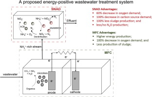
Anammox-based technologies for nitrogen removal: Advances in process start-up and remaining issues
Review
Year: 2015
DOI:
https://doi.org/10.1016/j.chemosphere.2015.06.094Authors:
Ali, Muhammad; Okabe, Satoshi
Journal: Chemosphere · Volume: 141 · Pages: 144–153
2014
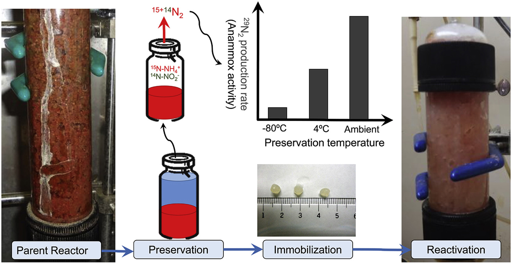
Simple, rapid and effective preservation and reactivation of anaerobic ammonium oxidizing bacterium “Candidatus Brocadia sinica”
Journal article
Year: 2014
DOI:
https://doi.org/10.1016/j.watres.2014.03.036Authors:
Ali, Muhammad; Oshiki, Mamoru; Okabe, Satoshi
Journal: Water Research · Volume: 57 · Pages: 215–222 · Publisher: Pergamon
2011
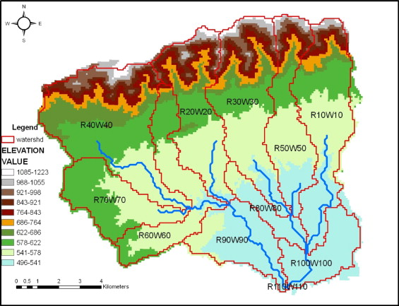
Simulation of the impacts of land-use change on surface runoff of Lai Nullah Basin in Islamabad, Pakistan
Journal article
Year: 2011
DOI:
https://doi.org/10.1016/j.landurbplan.2011.05.006Authors:
Ali, Muhammad; Khan, Sher Jamal; Aslam, Irfan; Khan, Zahiruddin
Journal: Landscape and Urban Planning · Volume: 102 · Issue: 4 · Pages: 271–279 · Publisher: Elsevier